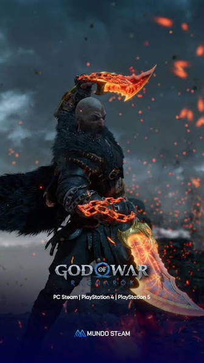

El viaje de Kratos y Atreus
Tras destruir el panteón griego, Kratos se refugia en Midgard. Allí deberá enseñar a su hijo Atreus a ser un dios, mientras Atreus le enseña a Kratos a volver a ser humano.

Tras destruir el panteón griego, Kratos se refugia en Midgard. Allí deberá enseñar a su hijo Atreus a ser un dios, mientras Atreus le enseña a Kratos a volver a ser humano.
